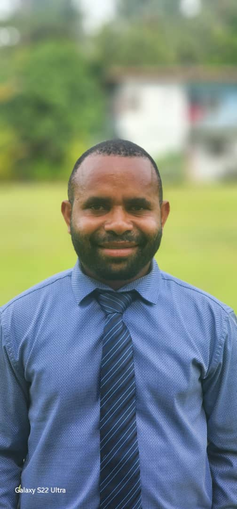
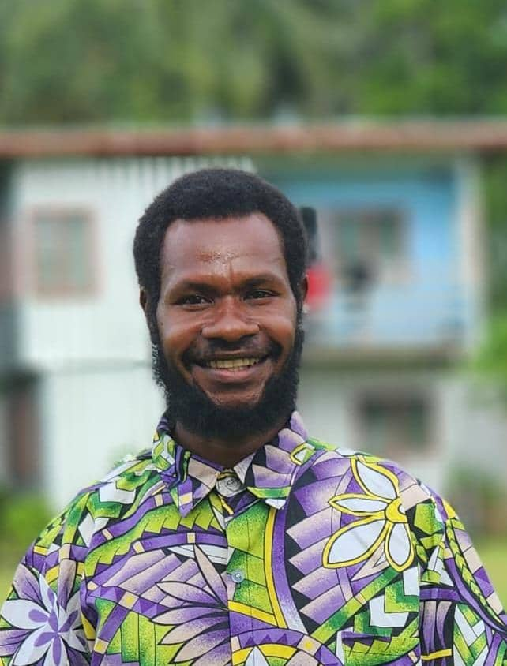
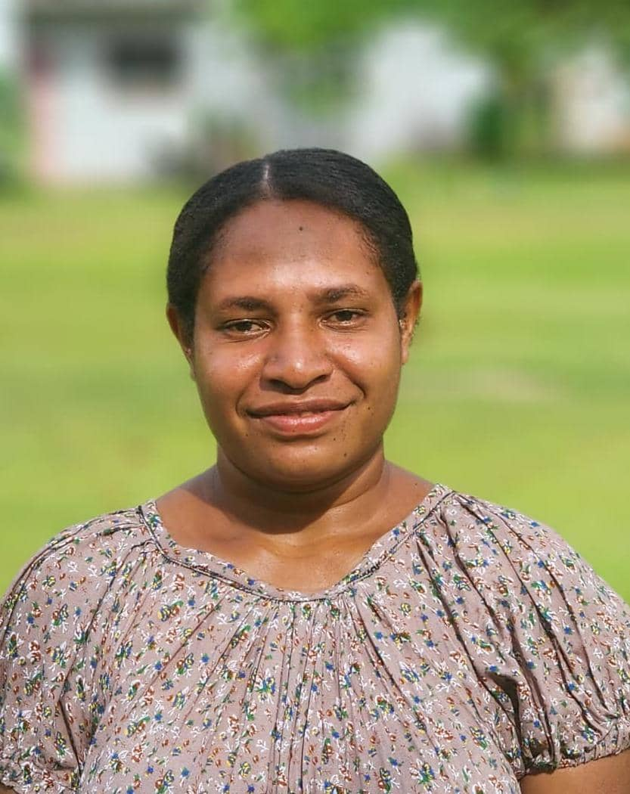
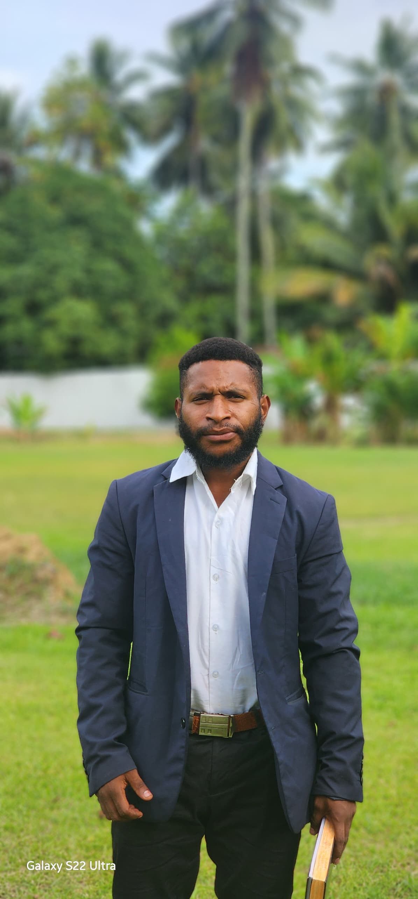
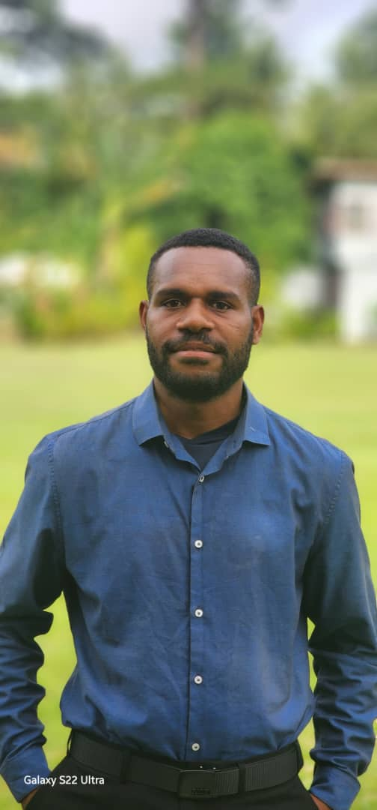
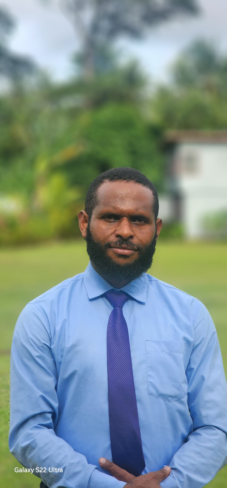

President
KEY ROLES & RESPONSIBILITIES:
- The president provides spiritual leadership by guiding Bible studies, prayer meetings, and evangelistic programs.
- They oversee administration and governance, ensuring smooth operations, delegating tasks, and maintaining church relations.
- They promote evangelism and mission work, organizing outreach programs and encouraging student participation in ministry.
- They support student welfare and discipleship, mentoring students, fostering unity, and advocating for their needs.

Vice-President
No message yet

Secretary
No message yet
Treasurer
No message yer.

Spiritual.Leader
No message yet

Choir
No message yet.
Fundraising
No message yet

Media Publicity Officer
No message yet.

Social Leader
No message yet.
Transport Coordinator
No message yet
Food Coordinator
No message yet
Donate to ATSA Programs
The Unitech Adventist Tertiary Students Association is focused on major outreach programs in 2025. These programs include Angau Memorial Hospital Visitation and the visitation to the Buimo Prison. Click here to find out more...